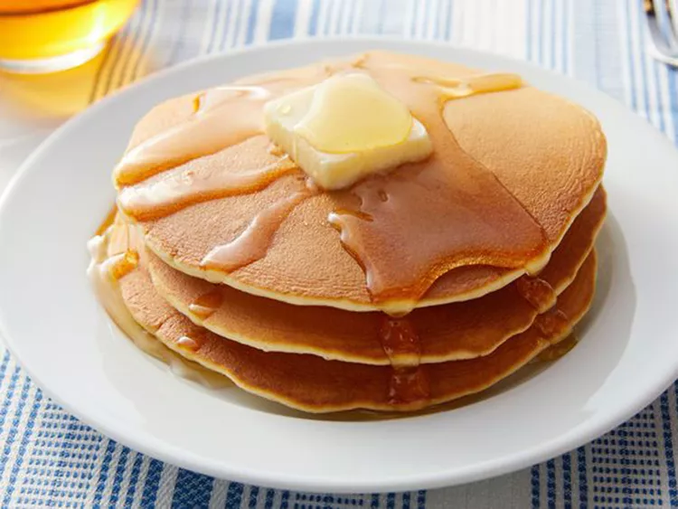

Pancakes

Description
Pancakes, the staple of any nutritious breakfast! It is simple, tasty, filling,
and it doesn't make you feel guilty about eating dessert which it practically is,
so early in the day, Ha ha. Dare I say that every man should know how to make pancakes as
part of their cooking skills? I think I will.
Ingredients
- 1 cup all-purpose flour
- 2 tablespoons white sugar
- 2 teaspoons baking powder
- 1 teaspoon salt, or to taste
- 1 cup milk
- 2 tablespoons vegetable oil
- 1 egg, beaten
Steps
- Combine flour, sugar, baking powder, and salt in a large bowl.
Make a well in the center, and pour in milk, oil, and egg. Mix until smooth.
- Heat a lightly oiled griddle or frying pan over medium-high heat.
Pour or scoop batter onto the griddle, using approximately 1/4 cup for each pancake;
cook until bubbles form and the edges are dry, 1 to 2 minutes. Flip and cook until browned
on the other side. Repeat with remaining batter.
- Add syrup, butter, and other toppings!